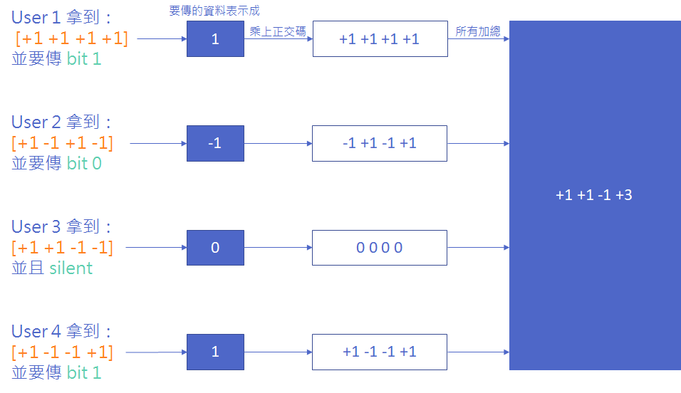
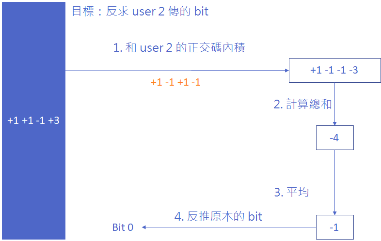
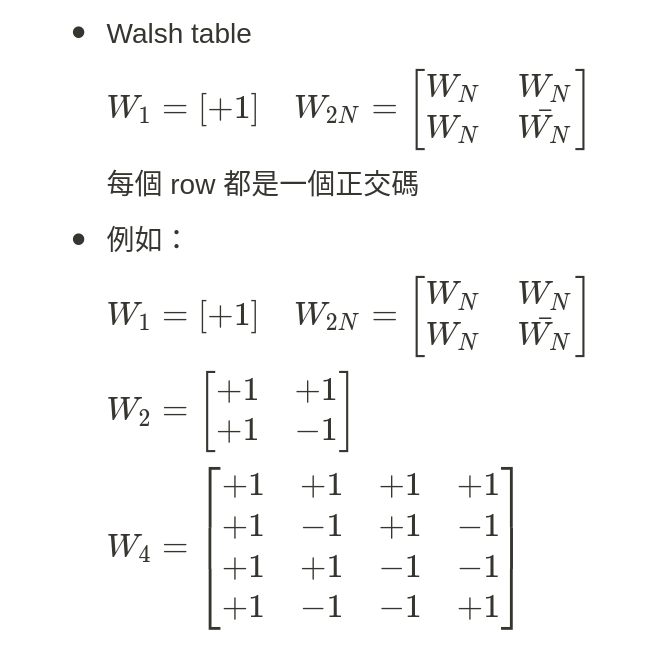

通訊原理與無線網路 - 07 Multiple Division Techniques
Chinese
通訊原理與無線網路
written by
LiaoWC
on 2021-05-31
Introduction and Comparisons
行動通訊系統的 channel 分成兩類：control channel 和 data channel。
- Multiple radio access: 此主題探討的是 random access 的 control channel。例如打電話你將電話號碼播出去時但還沒接通時。
- Multiple division techniques: 探討 data channel。在有限頻寬內，要切出多條使用者能使用的通道。例如電話打通後，就會拿到一條資料通道。
Classifications
資料的傳輸需要資源，那有哪些資源可以用來傳輸資料呢？
- 頻譜
- 時間
- 空間(SDMA：可以用指向性天線讓多個人可以在同個空間 access 基地臺)
分類
- 頻譜：FDMA （第一代行動通訊網路）（Frequency Division Multiple Access）
- 時間：TDMA （第二代行動通訊網路）（Time Division Multiple Access）
- Code：CDMA （第三代行動通訊網路）（Code Division Multiple Access）
- 空間：SDMA （泛指一般加上指向性天線後的。可以加 frequency、time 一起使用）（Space Division Multiple Access）
※第四代行動通訊網路用到了：OFDM/OFDMA（後面會討論）
Model of Multiple Divisions
General model
$s(f,t,c) =s(f,t)c(t)$
為什麼 c 跟時間有關？
一個系統的正交碼是固定的長度（正交碼：兩個碼的內積為零），例如四個位元的正交碼可以產生四種正交碼。正交碼的長度不會因為使用人數上升而變長。使用中的裝置（例如在講電話）數量是受控制的，若你閒置（像是沒有在通話中）就不會配給你正交碼，所以跟你當下時間的狀況有關。
在一個你要通話的時間點，系統會看可以配的正交碼有多少，然後配給你一個正交碼，但過了一小時，你又撥了一通電話，這時候你前一個通話用的正交碼可能被用掉了，配給你的就可能是另外一個正交碼。保持現在使用中的用戶的正交碼彼此的內積皆為零。
假設沒有用正交碼的model
$s(f,t,c) =s(f,t)$
第二代、第四代、第五代行動通訊沒有使用正交碼。Wifi 有版本有用到，但效果據說沒那麼好。
Duplex Communication
基地臺如果要同時送跟收，那應該至少要有幾個天線？兩個？但現階段的技術我們也不會讓基地台的兩根天線同時送跟收。可以兩根同時當傳送者或兩根同時當接收者。
- 如果兩根天線都一樣做送者，可以一根傳給一個人另一根傳給另一個人；也可以兩根都給同一個人（spatial diversity。但接受者通常只有一根天線）。
- 如果兩根都一樣做接收者的話，使用者送的時候即使AP天線再多，都收同一個人的。最新的Wifi（如ax, be）才能做到同時收不同人的訊號。但要做到收不同人的訊號需要做到時間同步(至少要大概微秒等級的同步)而且要消除一些頻道的干擾才做得出來。所以 uplink（上行）可能永遠沒有辦法把基地台所有的天線用完，要多個使用者能一起送就要做到時間同步等，增加overhead。
Full duplex vs half duplex
- Full duplex: 送跟收同時進行。（至少要有兩根天線）
- Half duplex: 可以送跟收，但同時間只能做一件事。（可以只有一根天線）
Forward vs reverse channel
- A forward (downlink) channel: BS → MS
- A reverse (uplink) channel: MS → BS
Two types: FDD vs TDD
FDD: frequency division duplexing
（例如買來的頻譜切兩段，一段給基地台送出用，一段給基地台接收用）
（範例：ALOHA，上行在一個頻率，下行在一個頻率，所以在送了之後要到另一個通道聽聽看有沒有 ACK，沒有的話就知道是失敗了。所以 ALOHA 使用 FDD 但 duplex 是 half duplex。）
TDD: time division duplexing
（沒有辦法做到 full duplex，因為時間是有序列的，不可能同一時間切成可以同時送跟收！）
有A vs 沒A ！？
FDMA <=> FDM
TDMA <=> TDM
CDMA <=> 無
SDMA <=> 無
OFDMA <=> OFDM
左邊這群在網路分層架構的第 2 層，右邊這群在第 1 層
FDMA + FDD? FDMA + TDD?
FDMA, TDMA跟FDD, TDD排列組合：
- FDMA over FDD: ✅
- FDMA over TDD: 可，但通常不會這樣做
- TDMA over FDD: ✅
- TDMA over TDD: ✅
※ CDMA的也需要 FDD 或 TDD
FDMA
- 用頻率切
- Reverse channels 和 forward channels 之間有 protecting bandwidth、不同的 suband 之間有 guard band：因為現在的濾波器設計並不完美，波的形狀不可能完美地變成方形的，稍為隔開能避免通道間的干擾。
TDMA
- 用時間切
- TDMA 的 frame 有 guard time，用來減少不同路徑下傳播延遲的干擾。
- Frame 傳輸時配給 data 的單位時間是一樣的，所以傳輸速度慢（如通道狀況不好），會傳比較少的資料。
CDMA
- 基於 spectrum-spread （展頻通訊） technology
- 每個使用者會得到一組跟別人不一樣的 spread-spectrum （展頻通訊） code
- 功率控制能改善頻率使用的效率
- 兩種 CDMA 實作方法：direct sequence (DS) and frequency hopping (FH)
- DSSS: direct sequence spreading spectrum. FHSS: frequency hopping spreading spectrum
範例
假設共有四組正交碼：
- [+1 +1 +1 +1]
- [+1 -1 +1 -1]
- [+1 +1 -1 -1]
- [+1 -1 -1 +1]
※ 它們兩兩內積皆為零
如果我要傳的 bit 是 0 ⇒ 用 -1 算
如果我要傳的 bit 是 1 ⇒ 用 1 算
如果我沒有要傳(silent) ⇒ 用 0 算


以這個例子來看，原本一個位元會變成四個位元（時間仍沒有拉長） ⇒ 頻率變高
正交碼如何產生

Spreading spectrun（展頻通訊）
- 展頻通訊是一種使用比所需更多頻寬來傳輸的技術。
- 一開始被用在軍用上，因為訊號聽起來像是雜訊，防止竊聽。
- 傳輸前先用獨立的 code 去做處理，接收者用相同的 code 去做反調變。
- 如何做展頻的調變？有兩種：DSSS 和 FHSS（DSSS: direct sequence spreading spectrum. FHSS: frequency hopping spreading spectrum）。
DSSS
直接將 message symbol 和 wideband pseudo noise (PN) spreading sequence 乘起來。
傳送者：
$m(t) = c(t) \otimes b(t)$
$c(t)$: wideband PN signal
$b(t)$: narrowband message signal
接受者：
收到 $r(t) = m(t) + i(t) = c(t) \otimes b(t) + i(t)$
$i(t)$ 是干擾。
如何解調變？乘上$c(t)$
$z(t) = c(t) \otimes r(t) = c^2(t)b(t) + c(t)i(t)$
由於$c^2(t) = 1$
$z(t) = b(t) + c(t)i(t)$
干擾$i(t)$也一樣會被$c(t)$ spread，最後再用 filter 濾掉。
FHSS
- 傳輸時迅速的跳到別的 carrier。
- 可以同時不同頻，多人使用。
- 換通道的原因：換位置環境的干擾會換。藍芽用此減少 frequency-selective fading，跳到不同頻率的就不會一直拿到 fading 很嚴重的通道。（某通道對你來說不好，對他人來說不一定就不好。）
- FHSS 需要精準的同步。
- Fast hopping：一個位元時間跳多條通道。
- Slow hopping：停在某通道上傳送多個位元。
- 藍芽使用這個。
- 比較慢。看看藍芽的速度就知道了。
- 可能會跟別人碰撞，如果跳到同一個地方的話。
SDMA
- 用 smart antenna: 指向性天線，會跟著人轉。
- 註：九十度角能量最集中。
OFDM & OFDMA
- OFDM: Orthogonal Frequency Division Multiplexing
- Multi-carrier 的調變，意即各子載波自己做自己的調變。
- 大量接近的正交 sub-carrier 平行地傳輸。
- 每個 sub-carrier 用一些傳統 low symbol rate 的調變方法，維持 data rates 跟 single-carrier 相似。
- 優點是在一些通道狀況較差的地方可以用。Low symbol rate 讓 symbol 之間的 guard interval 比較小，讓它比較可能去減低 ISI 的發生。另外還有節省頻寬的優點。